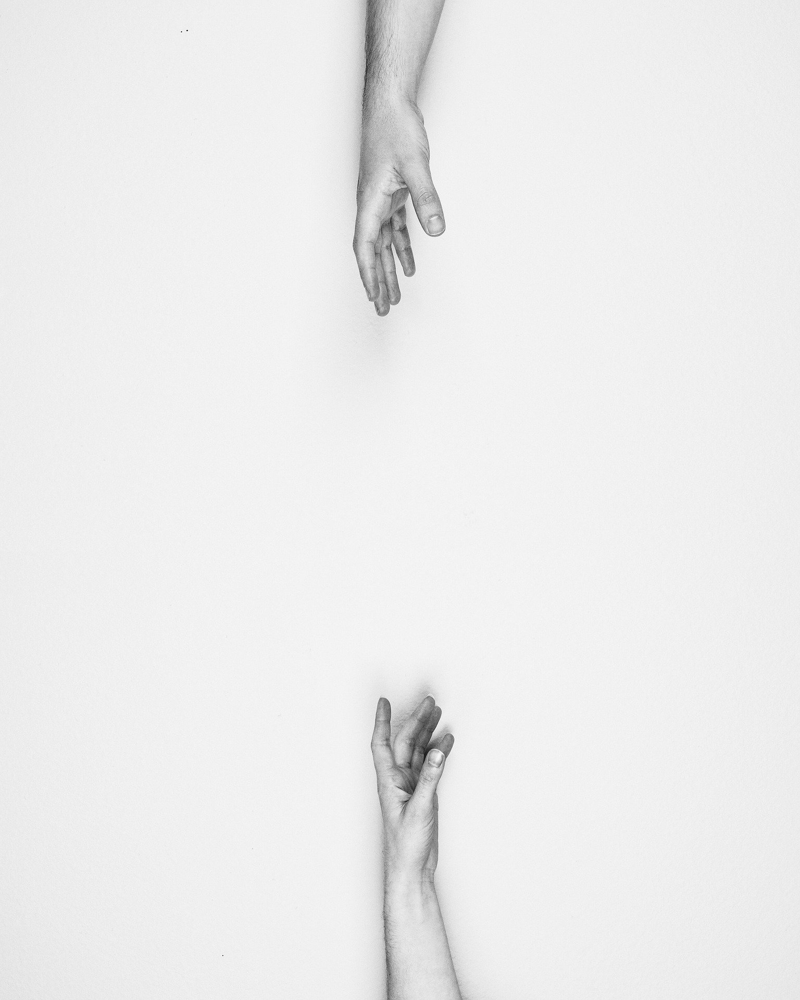

魂の実在
前世の記憶を保持した子どもの話や、同じ日に同じ負傷をした双子の話などは、
それを裏付けるもののように思える。
だけどそれらは聞いた話。誤解や虚偽、誇張、恣意的な解釈などが幾分混じっていることを想定しなければ
ならない。
今からするのは僕の話。……確かに単なる偶然なのかもしれない。
ただ偽りでないことだけは誓う。
その年は就職難だった。大学を卒業するもやりたい職に就けず、僕は田舎に帰省していた。
僕の部屋は玄関を入ってすぐ。隣は祖母の部屋だった。
祖母とはわけあって口をきかない状態。僕の方が一方的に避けていた。
それでも祖母は僕を心配していた。祖母は度々部屋を訪れるが、
「うるさいな！ほっといてくれ！」と僕は扉を閉めた。
……
何もしないままに半年が過ぎた。
いつの頃からか祖母は検査に出かけるようになった。幾日か帰ってこず。
やがて父から報告があった。
癌が見つかった。祖母は入院していた。
僕は見舞いに行かなかった。一緒に行かないかと父が誘うが、僕はイライラして返答しなかった。
「もう会えないかもしれないんだぞ？」
父ともまともに口をきいていなかった。僕はその頃の不幸を家族のせいにしていた。

就職についての不安……祖母についての不安。それでも動かない自分をどこかで責めていた。
日が暮れるに連れて焦燥感は昂じ、重苦しさは増していく。
とうとうある日、心のうちで折り合いをつけた。就職が決まったら会いに行こう。
職業安定所に足を運ぶ日が増えた。相変わらず仕事は少なかった。申し込むつもりもない募集要項を印刷してはファイルを
厚くしていった。
「うるさい」と怒鳴っていた毎朝の題目も今は聞こえてこず朝は静か。
遅くに目を覚ます度に思う。本当に就職が決まってからでいいのか？
そんな日が続いていたある夜、夢を見た。
祖母がいる。何か言葉を交わすわけでもなかった。祖母はただそこにいて、無表情にこちらを見つめている。
その短い夢を見ている間、切ないような懐かしいような思いが湧き起こり、不思議と対面しているような実感があった。
目を覚ますと朝の4時だった。
僕は決意した。もはや意地などどうでもよかった。感情の堰が切れた。
今日会いに行こう！絶対に会いに行こう！会いに行かなくちゃいけない！
歯を磨き、服を準備して朝を待った。
６時頃、家の中が慌しくなる。僕は部屋から出ず耳をそば立てていた。
７時頃、玄関が開いた。その時ばかりは立ち上がり、戸を少し開けて隙間から覗いた。
棺桶が運ばれてきて、中には祖母が入っていた。